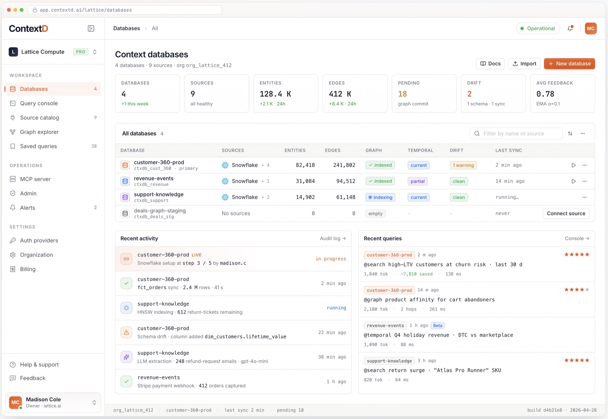
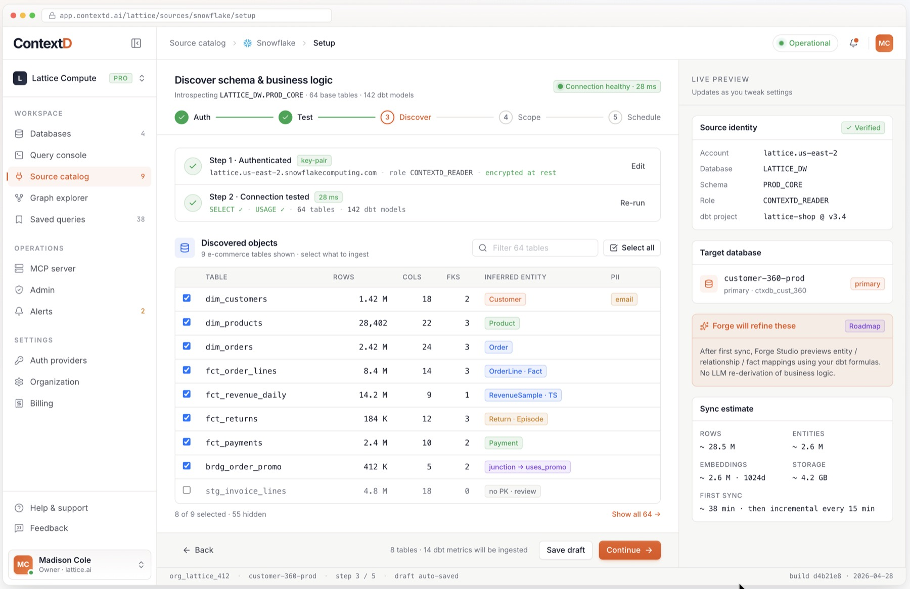
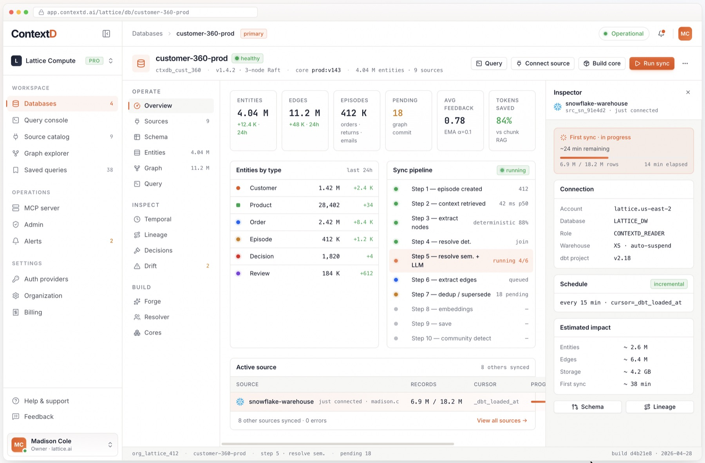
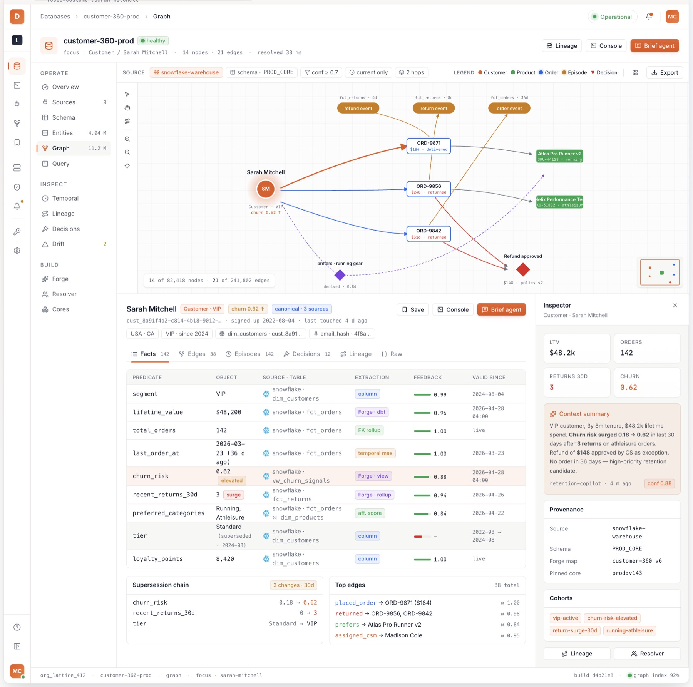
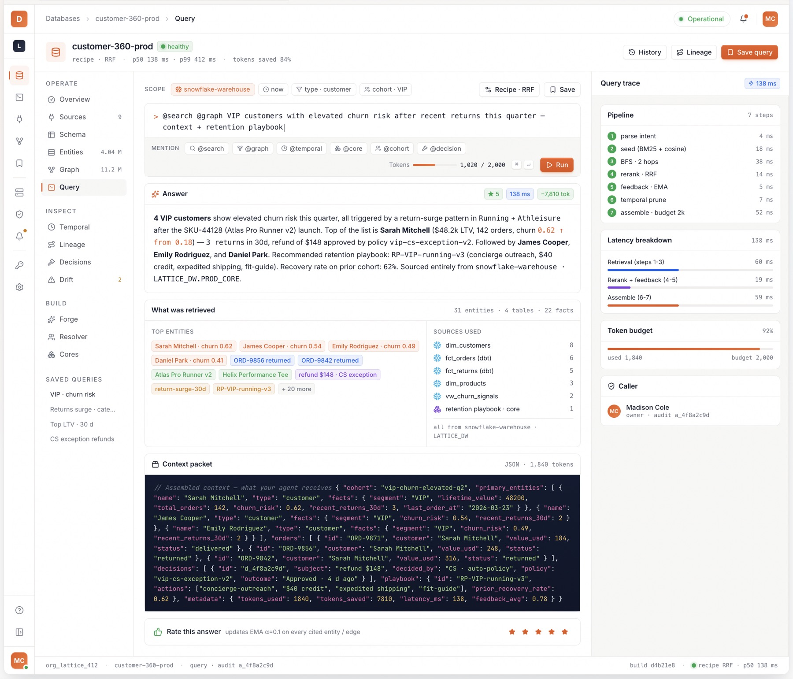

Contents
Part I — Fundamentals
1. The Problem
AI agents work with the wrong context. Every current approach fails in a specific, predictable way:
| Approach | What It Does | What It Misses |
|---|---|---|
| Vector Search (Pinecone, Weaviate) | Retrieves ~1,000 similar chunks | No relationships, no time, no structure. “Mercury” returns planet, element, and car — all equally ranked. |
| Graph Databases (Neo4j, Neptune) | Stores entity relationships | No temporal awareness, no decision lineage, not AI-native. SSPL restricts embedding. |
| RAG Frameworks (LangChain, LlamaIndex) | Orchestrates retrieval + LLM | Framework only — no persistent data layer, no context storage, no learning. Every query starts from scratch. |
| Multi-DB Assembly (Neo4j + Pinecone + custom) | Cobbles together graph + vector + temporal logic | 3+ databases, no cross-model ACID, consistency gaps, 3× infra cost. Graph and vectors can silently disagree. |
The core insight: AI agents don’t need “similar documents.” They need relationship-aware, temporally-grounded, ontology-constrained, feedback-weighted context assembly. That is not a feature you bolt onto an existing database. It requires a purpose-built system.
2. The Solution
ContextD is a database, not a framework.
| It Is | What That Means |
|---|---|
| A database | Stores entities, relationships, facts, temporal state, decisions — with ACID transactions across six data models |
| A context construction engine | Transforms raw enterprise data into a structured knowledge graph via a 10-step pipeline |
| An AI-native query system | Hybrid retrieval (BM25 + vectors + graph traversal), not flat similarity search |
| A temporal knowledge system | Bitemporal model — tracks both “when it was true” and “when we learned it” |
| A learning system | Feedback-weighted graph that improves with every interaction |
| Versionable | Context Cores = CI/CD for your knowledge graph (build, test, promote, rollback) |
The system requires a multi-model storage engine providing graph, document, key-value, vector, time-series, and full-text search in a single ACID-transactional substrate. ContextD adds the intelligence layer — ingestion, resolution, ontology, feedback, context assembly, and decision lineage — on top of this storage foundation. Understanding how these layers fit together requires examining the architecture.
Part II — Architecture
3. System Architecture
3.1 Six-Layer Stack
┌──────────────────────────────────────────────────────────────────┐
│ 1. INTEGRATION │
│ Python SDK · MCP Server (stdio/SSE/HTTP) · REST API · GraphQL │
│ Wire Protocols: Bolt · PostgreSQL · MongoDB · Redis · gRPC · HTTP │
├──────────────────────────────────────────────────────────────────┤
│ 2. RBAC & AUTH │
│ Tenant isolation · Identity federation · Permission enforcement │
├──────────────────────────────────────────────────────────────────┤
│ 3. CONTEXTD ENGINE │
│ Ingestion → Normalization → Enrichment → Storage → Retrieval │
├──────────────────────────────────────────────────────────────────┤
│ 4. UNIFIED MULTI-MODEL STORAGE SUBSTRATE │
│ Single ACID engine: Graph · Vector (HNSW/PQ) · Full-Text (BM25) │
│ · Document · Key-Value · Time-Series (Gorilla XOR) │
│ 70+ SIMD-accelerated graph algorithms │
├──────────────────────────────────────────────────────────────────┤
│ 5. CONTEXT FORGE │
│ Pre-pipeline source mapping · Schema inference · Curation UI │
├──────────────────────────────────────────────────────────────────┤
│ 6. CONNECTOR LAYER │
│ Airbyte (600+ sources) · 6 Custom P0 Connectors · OAuth2 (30+) │
└──────────────────────────────────────────────────────────────────┘3.2 Current Stack vs the Unified Substrate
The current production stack uses PostgreSQL for tenant metadata, Neo4j for graph and full-text, Milvus for vectors, Redis for hot caching, and Temporal for durable workers. The migration target is a single multi-model engine that subsumes Neo4j and Milvus into one ACID-transactional engine. Redis and Temporal remain in their orthogonal roles.
Why this migration matters: cross-model ACID (one transaction updates graph, vectors, full-text, and audit log under one WAL fsync), schema drift elimination (no divergence across separate databases), latency reduction (queries no longer cross 3-5 network hops), and license clarity (Apache 2.0 substrate eliminates SSPL/Commons-Clause entanglements).
3.3 The Closed Loop
The system is not a pipeline — it is a closed loop. Feedback from queries writes back to graph weights. Ontology constraints are invoked during ingestion. Context Forge ensures customer-owned schema work is honored. Context Cores snapshot the entire state. Every retrieval informs the next.
CONNECTOR CONTEXT FORGE INGESTION PIPELINE QUERY ENGINE
Snowflake ─┐ Natural Language Query
Postgres ─┤ ┌─ Introspect ─┐ │
SFDC ─┼─►├─ Profile ────┼─► Forge ┌─ Step 1: Episode ▼
HubSpot ─┤ ├─ Ingest BL ──┤ Mapping ────►├─ Step 2: Retrieve Context Hybrid Search
Gmail ─┤ ├─ Infer (7) ──┤ (versioned ├─ Step 3: Extract ◄ Forge ◄ feedback
Slack ─┘ └─ Studio ─────┘ msgpack + │ +Ontology ▼
↑ SHA-256) ├─ Step 4: Resolve (det.) Reranker
Customer review ├─ Step 5: Resolve(sem+LLM) ▼
/ edit / approve ├─ Step 6: Edges ◄ Forge Apply Feedback
├─ Step 7: Dedup/Invalidate ▼
├─ Step 8: Embeddings Token-Budget Prune
├─ Step 9: Save ──────────► ▼
├─ Forge-derived facts Context Window
└─ Step 10: Communities ▼
Agent Rates (1-5)
CONTEXT CORES │
Build ◄── Snapshot ◄── Graph Storage ▼
Test ◄── Query Suite EMA Weight Update
Promote ──► Production per node & edge
Rollback ◄── Previous Version ──► Graph StorageThe architecture defines the boundaries. What happens inside those boundaries — the storage engine, the data model, and the temporal system — is where ContextD’s structural advantages emerge.
4. The Database Engine
4.1 Multi-Model Unification
Six data models — record buckets, LSM range indexes, LSM full-text indexes, HNSW vector indexes, time-series shards, and string dictionaries — share one storage substrate. Every storable construct is a Component that owns files, participates in the page cache, registers for file locks, and writes WAL deltas identically.
This is what makes cross-model ACID real: a single transaction can simultaneously append a record, update adjacency segments, insert into secondary indexes, add a vector embedding, update the full-text index, emit a time-series sample, adjust a feedback weight, and append an audit entry — all under one txId with one WAL fsync.
4.2 Provenance
Every record carries provenance metadata: source pipeline, source task, extraction method (deterministic / LLM / forge-derived / ontology-constrained / manual / structured import), and a RID back to the originating Episode. A secondary index on source_episode_id supports “give me everything derived from episode X.” This provenance system is what makes audit and compliance possible — for any piece of knowledge in the graph, you can trace exactly where it came from.
4.3 Decision Lineage as First-Class Data
Decisions are not text in audit logs. They are typed entities with a strict schema and dedicated indexing:
Decision {
id (RID)
decision_type approval | exception | selection | commitment | rejection
subject what was decided
outcome the result
decided_at timestamp
exception boolean — was standard policy overridden?
justification text — required if exception=true
confidence float — 1.0 for explicit; lower for inference-derived
superseded_by nullable RID → another Decision
valid_at / invalid_at / created_at / expired_at bitemporal
source_pipeline, source_task, extraction_method provenance
}Four typed edges connect a Decision into the broader graph: DECIDED_BY → Person, INFORMED_BY → array of Fact/Episode RIDs, APPLIED_POLICY → Policy entity (versioned), AFFECTED → array of Entity RIDs.
A decision lineage walk traverses backward through INFORMED_BY edges, recovering every fact, episode, and policy that informed the decision. Typical decisions touch 10-50 vertices; the walk completes in <10ms. A decision impact walk traverses forward through AFFECTED edges, finding every entity touched and every downstream decision conditioned on them — used for audit replay.
The engine stores all of this data using a consistent schema. Understanding that schema — the seven primitives and how they connect — is essential to understanding how ContextD reasons about context.
5. The Data Model
Everything in ContextD is one of seven primitives. Each carries bitemporal metadata, provenance stamps, and feedback weights.
Entity (Node) — the nouns
People, companies, projects, tickets, deals, documents.
Entity {
id: UUID [PK] canonical_id: UUID (resolved identity after dedup)
entity_type: STRING name: STRING labels: [STRING]
summary: STRING name_embedding: [FLOAT] source: STRING
feedback_weight: FLOAT [0.0-1.0], default 0.5 confidence: FLOAT
valid_at / invalid_at created_at / expired_at
source_pipeline, source_task, extraction_method
}canonical_id is the key: when “John Smith” appears in Salesforce, “john@acme.com” in Gmail, and “john.smith” in Slack, the entity resolution pipeline merges them into one canonical entity.
Relationship (Edge) — the verbs
Typed, directed connections. Each carries a natural-language fact field enabling hybrid search over relationships — BM25 matches keywords, cosine matches meaning.
Relationship {
source_entity_id → target_entity_id: UUID
relationship_type: STRING fact: STRING fact_embedding: [FLOAT]
weight / feedback_weight: FLOAT episodes: [UUID]
valid_at, invalid_at, created_at, expired_at
reference_time, source, extraction_method, source_pipeline, source_task
}Fact — atomic, time-bounded claims
The ground truth that relationships and entities are built from.
Fact {
subject_entity_id: UUID predicate: STRING object: STRING|UUID
valid_at, invalid_at, created_at, expired_at
confidence, feedback_weight source_episode_id extraction_method
}Episode — raw source events
Every email, message, ticket, commit. All other primitives are derived from episodes via the ingestion pipeline. Full provenance chains back to these.
Saga — narrative continuity
Storylines spanning multiple episodes. “The Acme deal negotiation” — 47 emails over 3 months — gets an incrementally-updated summary plus temporal episode chains via NEXT_EPISODE edges.
Community — structural clusters
Groups of related entities discovered by Louvain or Label Propagation (SIMD-accelerated). LLM-generated summaries. Macro-level navigation for large graphs.
Schema Relationships
Episode ──extracts──► Entity · Fact · Relationship
Entity ──has_fact──► Fact Entity ──related_to──► Entity
Saga ──has_episode──► Episode ──next_episode──► Episode
Community ──has_member──► Entity Fact ──superseded_by──► Fact
Decision ──informed_by──► Fact · Episode
Decision ──decided_by──► Entity Decision ──applied_policy──► Entity
Decision ──affected──► Entity Ontology ──constrains──► Ingestion PipelineEvery primitive carries four timestamp columns. That temporal model — bitemporal storage — is the most powerful and most misunderstood feature in the system.
6. The Bitemporal Time Model
Every entity, relationship, and fact tracks two independent time dimensions:
| Dimension | Fields | Meaning |
|---|---|---|
| Event Time | valid_at → invalid_at |
When was this true in the real world? |
| Transaction Time | created_at → expired_at |
When did we record/learn/supersede this? |
A fact is current when invalid_at IS NULL AND expired_at IS NULL. A fact was true at date T when valid_at <= T AND (invalid_at IS NULL OR invalid_at > T). A fact was known to us at date T when created_at <= T AND (expired_at IS NULL OR expired_at > T).
Supersession is insert-not-update: the old fact gets expired_at = now() and invalid_at = new_fact.valid_at; the new fact is inserted alongside. Both coexist (~2× write amplification per mutation). Nothing is ever deleted.
Four Index Designs for Four Access Patterns
- Current state — partial index on
(subject, predicate, expired_at IS NULL) - Historical state at T — composite on
(subject, predicate, valid_at desc, invalid_at desc) - Knowledge state at T — composite on
(subject, predicate, created_at desc, expired_at desc) - Audit trail — covered by #3 with reverse scan
A bitemporal query rewriter translates AS OF SYSTEM TIME / AS OF VALID TIME into the appropriate index scans.
Supersession Walkthrough
t=1 (Jan 15) Email: "Acme's annual budget is $5M"
→ Fact: {object: "$5M", valid_at: Jan-01, invalid_at: NULL,
created_at: Jan-15, expired_at: NULL}
t=2 (Apr 3) Email: "Acme increased their budget to $7M"
→ Old fact: expired_at = Apr-03, invalid_at = Apr-01
→ New fact: {object: "$7M", valid_at: Apr-01, invalid_at: NULL,
created_at: Apr-03, expired_at: NULL}| Query | Answers | Returns |
|---|---|---|
| Current state | “What is Acme’s budget?” | $7M |
| Historical state | “What was the budget on Feb 1?” | $5M |
| Knowledge state | “What did we know on Mar 1?” | $5M (hadn’t learned about increase) |
| Audit | “When did we learn about $7M?” | April 3, 2026 |
Without bitemporal, an agent cannot distinguish “Alice left Acme in March” from “we learned in June that Alice left in March.” When making decisions based on what was known at the time of a past decision, the agent must query knowledge state — not current state. This is the temporal foundation that makes decision lineage meaningful.
With the architecture, engine, data model, and temporal system established, the next question is: how does data actually enter the graph?
Part III — Core Systems
7. Data Ingestion — The 10-Step Pipeline
Raw Data → [1] Create Episode
→ [2] Retrieve Context (previous episodes for continuity)
→ [3] Extract Nodes (LLM ◄── Ontology Engine constrains)
→ [4] Resolve Entities — Deterministic (exact, entropy gate, MinHash)
→ [5] Resolve Entities — Semantic + LLM (cosine, LLM final)
→ [6] Extract Edges (LLM ◄── Ontology Engine constrains)
→ [7] Resolve/Dedup Edges (hybrid search → supersede contradictions)
→ [8] Generate Embeddings (parallel batch → HNSW)
→ [9] Save to Graph (bulk write with full provenance)
→ [10] Community Detection (Louvain/LP → LLM summary)Every step is wrapped in an OpenTelemetry span. Every element carries source_pipeline, source_task, extraction_method, source_episode_id.
Entity Resolution — The 5-Phase Cascade
Steps 4 and 5 implement a cascading dedup strategy that reduces LLM calls by ~80%:
New Entity
│
▼
[Phase 1: Exact Match] ──── match? → MERGE (free, instant, 100% accuracy)
│ no match
▼
[Phase 2: Entropy Gate] ─── entropy < 1.5 bits or < 6 chars? → SKIP FUZZY
│ passes gate
▼
[Phase 3: MinHash/LSH] ──── Jaccard ≥ 0.9? → MERGE (cheap, deterministic, ~95%)
│ no match
▼
[Phase 4: Cosine Similarity] ── ≥ 0.6? → CANDIDATE (up to 15)
│ candidates found
▼
[Phase 5: LLM Final] ────── LLM says same? → MERGE; else → CREATE NEWParameters: MinHash with 3-gram shingles, 32 permutations, LSH band size 4, Jaccard threshold 0.9. Cosine on name embeddings (1536-dim), threshold 0.6, max 15 candidates. Entropy gate: Shannon entropy < 1.5 bits OR length < 6 characters → skip fuzzy (prevents “Q1”, “API”, “USA” from entering unreliable fuzzy matching).
Phases 1-3 handle ~80% of resolutions before LLM is called. This pipeline handles unstructured sources well, but structured enterprise sources — Postgres OLTP, Snowflake with 150-model dbt projects, Salesforce custom objects — deserve a different treatment. That’s what Context Forge provides.
8. Context Forge — Pre-Pipeline Mapping
Why Context Forge Exists
Treating every source as raw text and relying on LLM extraction fails for structured enterprise sources in three ways.
It ignores schema knowledge — customers arrive with dbt projects, LookML models, and custom objects, and re-deriving via LLM discards their work.
It misses business logic — most analytics value lives in derived metrics (LTV, MRR), not raw columns, and the LLM cannot reproduce customer-owned formulas.
And enterprises do not trust black-box ingestion — regulated industries require auditable mappings.
The Four-Stage Flow
Context Forge runs once per source connection at onboarding, then re-runs incrementally when schema changes:
┌──────────────────────────────────────────────────────────────────┐
│ Stage 1: INTROSPECTION │
│ Source Introspector + Data Profiler + Business Logic Ingester │
│ → Output: canonical Source Profile (schema graph + data stats │
│ + business logic DAG) │
├──────────────────────────────────────────────────────────────────┤
│ Stage 2: INFERENCE │
│ Mapping Inference Engine (7 passes) │
│ → Output: Candidate Forge Mapping │
├──────────────────────────────────────────────────────────────────┤
│ Stage 3: CURATION │
│ Forge Studio (3-pane review/edit UI) │
│ → Output: Approved Forge Mapping │
├──────────────────────────────────────────────────────────────────┤
│ Stage 4: COMMIT │
│ Versioned, content-addressed (msgpack + SHA-256), immutable │
│ Forge-to-Pipeline Bridge configures the 10-step pipeline │
└──────────────────────────────────────────────────────────────────┘Components
Source Introspector connects to source systems, extracts schema metadata.
Data Profiler runs statistical analysis (type inference, cardinality, null ratio, value distribution) against 10K-100K row samples; samples are not retained after mapping is committed.
Business Logic Ingester accepts dbt models, LookML views, SQL views, DAX measures, stored procedures.
Mapping Inference Engine — seven inference passes:
- Table-to-Entity-Type classifier — heuristics + LLM-assisted naming
- FK-to-Relationship classifier — direction, cardinality, ontology matches
- Junction Table Detector — composite PK over exactly two FKs → bidirectional Relationships
- Column-to-Fact-Predicate mapper — column → predicate, type → fact value type
- Time-Series / Audit-Table Recognizer — monotonic timestamp + repeated entity FK → Episodes;
*_history/*_audit→ bitemporal hints - Derived-Metric Translator — each business logic metric → Derived Fact
- Confidence Scoring — 0-1 per inference based on ontology match, naming, profile, LLM agreement
Forge Studio — three-pane UI: source schema (left), proposed mapping with confidence indicators (center), resulting graph preview (right). Includes validation panel, version diff, save/apply/export.
Forge Profiles — pre-built mappings for Salesforce CRM, HubSpot, Stripe, Shopify, Zendesk, Jira/Linear, dbt+Fivetran Snowflake, generic Postgres.
Forge-to-Pipeline Bridge — when applied, the mapping makes ingestion Steps 3 and 6 deterministic for known structures, reducing LLM cost by 60-80% for significant structured sources.
Context Forge solves the problem of getting structured data in. But a harder problem remains: when the same entity appears across multiple sources with no shared ID, how do you know it’s the same person?
9. Context Resolver — Cross-Source Identity Stitching
Context Resolver turns raw, multi-source records into canonical entities. It handles two paths: deterministic (structured sources with stable PKs/FKs, resolved via Context Forge’s FK graph + source-record-ID equality) and probabilistic (heterogeneous/unstructured sources with no shared ID, resolved via the six-stage pipeline below).
The Six-Stage Resolver Engine
┌──────────── Stage A — Blocking ────────────────────────────────┐
│ HNSW vector ANN + DeepBlocker learned blocking + MinHash LSH │
│ → reduces O(N²) candidate space to O(N log N) │
└────────────────────────────────────────────────────────────────┘
▼
┌──────────── Stage B — Probabilistic Record Linkage ────────────┐
│ Fellegi-Sunter: m/u probabilities per attribute, EM-learned │
│ Calibrated thresholds via Platt scaling / isotonic regression │
└────────────────────────────────────────────────────────────────┘
▼
┌──────────── Stage C — Neural Pairwise Matching ────────────────┐
│ Cross-encoder (DITTO-style): RoBERTa/DeBERTa-v3, ~110M params │
│ Fine-tuned per entity-type · ~5K pairs/sec on GPU │
└────────────────────────────────────────────────────────────────┘
▼
┌──────────── Stage D — Coreference (Unstructured Text) ─────────┐
│ NER (GLiNER zero-shot / RoBERTa fine-tuned) + within-doc │
│ coref + cross-document coref + mention-to-canonical linking │
└────────────────────────────────────────────────────────────────┘
▼
┌──────────── Stage E — Identity Graph Stitching ────────────────┐
│ PSL transitive closure · Conflict detection · Soft-link mode │
│ Bitemporal annotations on every edge │
└────────────────────────────────────────────────────────────────┘
▼
┌──────────── Stage F — Active Learning + LLM Adjudication ──────┐
│ Residual 5-10% hard cases · Uncertainty sampling │
│ Human label via Resolver Studio · LLM few-shot final │
└────────────────────────────────────────────────────────────────┘What is explicitly avoided: String-distance heuristics (Levenshtein, Jaro-Winkler) as primary signals — famously brittle on real enterprise data. Graph-only ER without coreference — ~30% of enterprise entity references live in free text. One-shot LLM extraction — too expensive at scale, inconsistent without fine-tuning.
The Identity Graph
The persistent artifact. Every canonical entity carries source identifiers, reconciled attributes, and a complete audit trail:
canonical_id (UUID)
├── identifiers[] = [
│ { source: "salesforce", source_id: "...", confidence: 1.00, evidence: "deterministic_pk" },
│ { source: "gmail", source_id: "...", confidence: 0.99, evidence: "email_exact+domain" },
│ { source: "slack", source_id: "...", confidence: 0.94, evidence: "cross_encoder+name" },
│ ]
├── attribute_consensus = {
│ "name": "Alice Chen" (salesforce, 1.00),
│ "title_current": "VP of Engineering" (confluence, 0.97, valid_at: 2025-06-15)
│ }
└── audit_trail = [ ... resolution events ordered by created_at ... ]The graph is fully bitemporal: every identifier link carries valid_at / invalid_at and created_at / expired_at.
Resolver Studio & Profiles
Three review queues: Active-learning queue (pairs flagged via uncertainty sampling, side-by-side with cross-encoder confidence and Fellegi-Sunter breakdown), Conflict queue (PSL constraint violations), Identity-graph explorer (navigate canonical entities, drill into edges, view bitemporal history).
Pre-tuned Resolver Profiles per entity type: person-crm, person-engineering, organization-account, deal-opportunity, device-asset, product-sku.
Data enters through the pipeline, structured sources are mapped by Context Forge, identities are stitched by Context Resolver. The next question: how does data come out when an agent needs context?
10. Retrieval & Context Assembly
Hybrid Retrieval
Three search methods run in parallel, then merge through a reranker:
| Method | Strong at | Misses |
|---|---|---|
| BM25 (Lucene) | Exact terms, names, IDs, jargon | Paraphrases, synonyms |
| Cosine (HNSW) | Semantic meaning, paraphrases | Exact names, IDs |
| BFS (graph traversal) | Structural relationships | Disconnected entities |
Five reranking strategies: RRF (default, rank-based, k=60), MMR (diversity, λ=0.7), Cross-Encoder (neural accuracy), Node Distance (graph proximity), Episode Mentions (recency). 3 methods × 5 rerankers = 15 composable strategies.
Why RRF as default: BM25 scores (0-20), cosine (0-1), and BFS (0-1) live on incompatible scales. RRF uses rank positions — scale-independent.
The 7-Step Context Assembly Algorithm
- Parse Intent — decompose query into entity references, relationship hints, temporal constraints
- Seed Entity Selection — BM25 + cosine identify BFS starting points
- Hybrid Parallel Search — BM25 + cosine + BFS via
asyncio.gather - Rerank & Merge — deduplicate by UUID, apply configured reranker
- Apply Feedback Weights —
final_score = reranker_score × feedback_weight - Budget-Aware Temporal Pruning — fill
max_tokensin priority order: primary entities → direct relationships → current facts → saga summaries → decision lineage - Serialize & Package — structured JSON with tokens used, entities traversed, confidence, latency
Target: Token Reduction. Chunk-based RAG retrieves ~3,400 tokens of overlapping, redundant text. ContextD retrieves ~800 structured tokens — entities appear once (deduplication), superseded facts are dropped (temporal pruning), low-weight elements are excluded (feedback pruning). The reduction is only achievable because bitemporal storage, feedback weights, and context assembly work together.
Step 5 — feedback weights — is what makes the graph learn. The next section explains how.
11. Feedback, Ontology & Context Cores
The Feedback System — Streaming EMA
Each agent rating (1-5) is normalized to [0.0, 1.0] and fed into an exponential moving average:
updated_weight = previous_weight + α × (normalized_rating − previous_weight)α = 0.1: small enough to resist single-rating swings, large enough to converge within ~30 interactions. After 30 positive rounds, an entity’s weight rises from 0.50 → ~0.92. Its retrieval score jumps from 0.90 × 0.50 = 0.45 to 0.90 × 0.92 = 0.83.
Design properties: cold-start safe (all weights start at 0.5), idempotent (duplicates skipped), session-aware, auditable (all events logged). The graph literally gets smarter with use.
The Ontology Engine
Optional. Constrains what the LLM can extract, improving consistency and reducing hallucinated types. OWL-like JSON schema with classes (subclass/disjoint), object properties (domain/range), and datatype properties (cardinality).
Four-step semantic routing (TrustGraph-inspired): Embed every class and property → Select relevant subset via vector match (threshold 0.3, top-k 10) + dependency resolution → Inject into LLM extraction prompt via Jinja2 → Validate output against rules (class filtering, domain/range enforcement, cardinality checks, disjoint-class enforcement).
The ontology is not a passive schema — it actively participates in extraction at pipeline Steps 3 and 6. Pre-built ontologies ship for CRM, Support, Engineering, and Marketing.
Context Cores — Versioned Graph Snapshots
Versioned, portable, content-addressed snapshots of the entire graph state.
Lifecycle: BUILD → TEST → VERSION → PROMOTE → PRODUCTION (with instant ROLLBACK).
Contents: graph data, embeddings, ontology, source manifests, retrieval policies, feedback weights, metadata (SHA-256 content hash, build timestamp). Serialized via msgpack; each core is immutable once built. Think of them as Docker images for knowledge graphs.
These three systems — feedback, ontology, and Context Cores — complete the picture of how ContextD operates. The question now is: does it perform?
Part IV — Validation & Capabilities
12. Benchmarks and Validation
This section captures measured performance from controlled benchmarks on existing database candidates — ArcadeDB (Apache 2.0, multi-model) and FalkorDB (SSPL, in-memory graph) — run on identical infrastructure and comparable datasets, alongside published benchmarks for Neo4j, Qdrant, Pinecone, Weaviate, and others. The results explain why no existing database meets ContextD’s requirements and why a purpose-built system is necessary.
12.1 Test Environment
| Component | Specification |
|---|---|
| DB Host | Azure Standard_D16s_v5 — 16 vCPU, 64 GB RAM, 240 GB Premium SSD |
| Client Host | Azure Standard_D4s_v5 — 4 vCPU, 16 GB RAM |
| Network | Same VNet, private IPs, ~0.73ms HTTP RTT |
| ArcadeDB | v26.4.2, JVM heap 48 GB, G1GC, production mode, HTTP/JSON API |
| FalkorDB | Latest, Podman, –maxmemory 48 GB, host networking, Redis protocol |
| Dataset Metric | ArcadeDB | FalkorDB |
|---|---|---|
| Vertices (Entity) | 475,191 | 344,554 |
| Edges (Relation) | 1,373,872 | 772,632 |
| Avg edges/vertex | 2.89 | 2.24 |
| Embedding dims | 1,024 (Cohere embed-english-v3.0, float32) | Same |
Both datasets derived from DBpedia 2022-12 entity graphs joined with Cohere Wikipedia embeddings.
12.2 Head-to-Head: ArcadeDB vs FalkorDB
Peak Throughput (ops/sec)
| Query Type | ArcadeDB | FalkorDB | FalkorDB Advantage | Notes |
|---|---|---|---|---|
| Point Lookup | 1,456 @ 16T | 6,034 @ 16T | 4.1× | Redis in-memory hash tables vs LSM B-tree |
| Full-Text (BM25) | 1,480 @ 32T | 4,703 @ 64T | 3.2× | Both use Lucene; FalkorDB avoids disk I/O |
| Graph 1-hop | 596 @ 8T | 5,571 @ 32T | 9.3× | Sparse matrix vs adjacency list locks |
| Vector Search | 157 @ 8T | 979 @ 16T | 6.2× | Both HNSW; FalkorDB benefits from zero page cache misses |
| Full Hybrid | 137 @ 32T | 828 @ 16T | 6.0× | The actual AI context workload |
Single-Thread Latency p50 (ms, lower is better)
| Query Type | ArcadeDB | FalkorDB | FalkorDB Advantage |
|---|---|---|---|
| Point Lookup | 0.77 | 0.33 | 2.3× |
| Full-Text (BM25) | 3.96 | 0.40 | 9.9× |
| Graph 1-hop | 1.90 | 0.39 | 4.9× |
| Vector Search | 42.3 | 1.72 | 24.6× |
| Full Hybrid | 47.3 | 2.09 | 22.6× |
Latency Under Load (p50 ms)
| Query Type | ArcadeDB 1T | ArcadeDB 128T | FalkorDB 1T | FalkorDB 128T |
|---|---|---|---|---|
| Point Lookup | 0.77 | 82.1 | 0.33 | 29.0 |
| Graph 1-hop | 1.90 | 228.3 | 0.39 | 19.2 |
| Vector Search | 42.3 | 871.1 | 1.72 | 133.3 |
| Hybrid | 47.3 | 975.6 | 2.09 | 163.6 |
Ingestion Performance
| Phase | ArcadeDB | FalkorDB | Winner |
|---|---|---|---|
| Vertex ingestion (345K) | ~260s | ~130s | FalkorDB 2× |
| Edge ingestion (773K) | ~320s | ~2s | FalkorDB 160× |
| Vector index build | 150s | ~1,200s (~20 min) | ArcadeDB 8× |
| Full-text index build | ~600s | 5.8s | FalkorDB 103× |
Critical difference: during FalkorDB’s 20-minute vector index build, vector queries are blocked (UNDER CONSTRUCTION). ArcadeDB allows concurrent queries during index construction.
12.3 Industry Context
Graph Traversal (1-hop)
| System | p50 Latency | Peak QPS | Architecture |
|---|---|---|---|
| FalkorDB | 0.39ms | 5,571 @ 32T | In-memory Redis module, sparse matrix |
| Memgraph | ~1.1ms | 32,028 | In-memory C++, no JVM |
| ArcadeDB | 1.90ms | 596 @ 8T | Disk + page cache, multi-model ACID |
| Neo4j | ~28ms | 1,010 @ 16T | JVM, index-free adjacency, SSPL |
ArcadeDB at 1.90ms is 15× faster than Neo4j and competitive with in-memory engines, despite running on disk-backed multi-model storage.
Vector Search (HNSW ANN)
| System | p50 Latency | Scale | Notes |
|---|---|---|---|
| Qdrant | ~1ms | 1M (SIFT-1M) | Dedicated vector DB, Rust |
| FalkorDB | 1.72ms | 345K | In-memory HNSW |
| Pinecone (serverless) | 16ms | 10M | Managed |
| ArcadeDB | 42.3ms | 475K | Native to multi-model engine |
| Pinecone (DRN, production) | 45ms | 135M | 600 QPS sustained |
Full Hybrid Retrieval (BM25 + Vector + Graph)
The query pattern AI agents actually need — and the one nobody else benchmarks as a single operation.
| System | Hybrid p50 | What It Takes |
|---|---|---|
| FalkorDB | 2.09ms | 1 process, in-memory, SSPL, 3 data models |
| ArcadeDB | 47.3ms | 1 process, disk-backed, Apache 2.0, 6 data models, ACID |
| Neo4j + Pinecone + ES | ~120-200ms (est.) | 3 processes, 3 network hops, no cross-DB ACID |
| Weaviate (hybrid) | ~15-30ms | BM25 + vector only — no graph traversal |
12.4 Bottleneck Analysis
#1 — Point Lookup ceiling (~1,450 ops/sec on ArcadeDB). Sub-ms queries but throughput barely scales past 4T. FalkorDB hits 6,034 on the same hardware — the gap is in-memory hash tables vs disk-backed B-tree + HTTP overhead. Mitigation: in-process cache (Caffeine/LRU), Redis tier, read replicas.
#2 — Graph traversal lock contention (~595 ops/sec @ 8T on ArcadeDB). Most concerning. Saturates at 4 threads due to adjacency-list page-level locks. FalkorDB’s sparse matrix avoids this entirely (5,571 ops/sec at 32T). Mitigation: CSR-based Graph Analytical View for lock-free reads, hot subgraph caching.
#3 — Vector search CPU-bound (157 ops/sec @ 8T on ArcadeDB). HNSW random memory access + internal locks. FalkorDB achieves 979 ops/sec — 6.2× faster. Latency degrades 20× from 8T to 128T on ArcadeDB while throughput stays flat. At 6M vectors, single-query latency grows to ~100-200ms. Mitigation: read replicas, per-shard horizontal scaling, PQ + pre-filtering.
#4 — Hybrid ceiling (137 on ArcadeDB, 828 on FalkorDB). Dominated by vector search on both engines (89% of ArcadeDB’s hybrid latency, 82% of FalkorDB’s). All vector mitigations apply directly.
12.5 Evaluation: Why No Existing Database Is Sufficient
FalkorDB’s 6× throughput advantage raises an obvious question. The answer: both candidates fail ContextD’s requirements, in different ways.
| Factor | ArcadeDB | FalkorDB | ContextD Requirement |
|---|---|---|---|
| License | Apache 2.0 — permissive | SSPL — restricts commercial use | Permissive, embeddable |
| Storage | Disk-backed — scales beyond RAM | In-memory only — 6M entities ≈ 140 GB | Must scale beyond RAM |
| Data models | 6 (graph + document + KV + vector + full-text + time-series) | 3 (graph + vector + full-text) | 6+ for cross-model ACID |
| Query during ingestion | Yes — concurrent during index build | No — blocked during ~20 min HNSW build | Required for production |
| Wire protocols | 6 (Bolt, PostgreSQL, MongoDB, Redis, gRPC, HTTP) | 1 (Redis) | Multi-protocol for ecosystem fit |
| Embeddable | Yes (Java, via jpype for Python) | No (server only) | Required for embedded mode |
| Bitemporal | No native support | No native support | Required — insert-not-update with 4 temporal columns |
| Feedback weights | No inline per-record weight | No inline per-record weight | Required — multiplied at query time |
| Decision lineage | No typed vertices/edges | No typed vertices/edges | Required — first-class entities with strict schema |
| Context assembly | No native query planner | No native query planner | Required — hybrid BM25+vector+graph in one transaction |
ArcadeDB has the right architecture (multi-model ACID, disk-backed, Apache 2.0) but lacks bitemporal time, feedback weights, decision lineage, and context assembly — the intelligence layer that makes ContextD a context database rather than a generic multi-model engine. FalkorDB has the speed but lacks three data models, blocks queries during ingestion, and its SSPL license prohibits commercial embedding. Neither treats context as a first-class data model.
12.6 Architectural Commitments from Evaluation
The benchmarks exposed four performance requirements that any context database must address:
- Separate ingestion and query paths — HNSW indexing takes 150s for 475K vectors (1,200s on FalkorDB); mixing creates contention on both engines.
- Independent horizontal scalability for vector search — vector search is the bottleneck on both engines (89% of hybrid latency on ArcadeDB, 82% on FalkorDB). Per-shard throughput must be independently scalable.
- Hot-path cache layer — the system of record needs a hot read cache for frequently-accessed entities, addressing the ~1,450 ops/sec point lookup ceiling.
- CSR-based analytical view — graph traversal saturates at 4 threads on ArcadeDB due to page-level locks. CSR supports lock-free parallel reads — the path to closing the 9.3× gap with FalkorDB.
12.7 Why a New Database Is Needed
The benchmarks confirm that no existing database — not ArcadeDB, not FalkorDB, not any combination of specialized databases — natively supports what AI context assembly requires. Three structural deficiencies make this clear.
No existing database treats context as a first-class data model. The best multi-model engines provide graph, vector, full-text, document, KV, and time-series under one ACID transaction — but they have no concept of episodes, sagas, decisions, feedback weights, or context cores. These are not features you configure; they are primitives that shape schema, indexing, and query execution. Bitemporal supersession (insert-not-update with four temporal columns), feedback-weighted retrieval (inline per-record weights multiplied at query time), and decision lineage (typed vertices with strict edge classes) require storage-layer integration that no general-purpose database provides. ContextD is purpose-built to add these as first-class citizens.
Performance and architecture are in tension — and only a purpose-built system resolves both. FalkorDB delivers 22× lower hybrid latency than ArcadeDB. But it requires all data in RAM (6M entities ≈ 140 GB), blocks queries during vector index builds, offers only 3 data models, and carries SSPL licensing that prohibits commercial embedding. ArcadeDB provides the right architectural ingredients (disk-backed, Apache 2.0, 6 data models, 6 wire protocols) but its graph traversal saturates at 4 threads and its vector search peaks at 157 ops/sec. The database ContextD needs requires multi-model ACID plus bitemporal time, feedback weights, and context assembly — and that database does not exist today.
The “stitch three databases together” approach fails at the system level. The industry default — Neo4j for graphs, Pinecone for vectors, Elasticsearch for full-text — produces estimated hybrid latency of 120-200ms, requires 3 separate processes with no cross-model ACID, and makes bitemporal queries, feedback-weighted retrieval, and decision lineage architecturally impossible. You cannot implement supersession across three databases that don’t share a transaction log. You cannot apply feedback weights at query time when the weights live in a different process than the vectors. You cannot walk a decision lineage chain when the decisions, facts, and policies are spread across three stores with no referential integrity between them. The multi-DB assembly isn’t just slower — it is structurally incapable of supporting the features that make context assembly work.
13. Distinguishing Capabilities
Fourteen structural commitments baked into schema, storage, and engine internals. Each includes why retrofitting fails — why competitors cannot add these after the fact.
13.1 Database-native multi-model storage. Single ACID engine holds graph, vector (HNSW+PQ), full-text (BM25), document, KV, time-series. Every transaction atomic across all six.
Retrofitting fails: cross-process plugins cannot deliver cross-model ACID; native performance requires substrate-level commitment.
13.2 Bitemporal at schema level. Every row carries four timestamp columns; supersession is insert-not-update with OCC.
Retrofitting fails: historical event-time and transaction-time information cannot be back-filled.
13.3 Feedback-weighted retrieval at the data layer. Every node/edge carries inline feedback_weight (4 bytes); retrieval multiplies reranker scores at zero I/O cost.
Retrofitting fails: adding per-record float to a DB that didn’t reserve the slot means full table rewrite.
13.4 Decision lineage as first-class data. Typed vertices with strict schema, four typed edge classes, bitemporal columns.
Retrofitting fails: free-form node types don’t enforce invariants; document stores lack typed edges.
13.5 Versioned content-addressed snapshots. Context Core = immutable msgpack archive identified by SHA-256, containing entire graph state.
Retrofitting fails: versioning means versioning topology + embeddings + indexes + feedback weights simultaneously.
13.6 Schema-aware pre-pipeline mapping. Context Forge owns ingestion, schema, and curation UX. 60-80% LLM cost reduction.
Retrofitting fails: no single alternative owns all three.
13.7 Cross-source identity stitching. Six-stage pipeline, bitemporal Identity Graph, Resolver Studio, per-entity-type profiles.
Retrofitting fails: requires simultaneous ownership of ingestion, vectors, neural matching, coreference/NER, PSL, bitemporal storage, and active-learning UX.
13.8 Provenance on every element. Dictionary-encoded source pipeline, task, extraction method, episode ID (~16 bytes per record).
13.9 Hybrid retrieval composability. Three methods, five rerankers, one transaction context.
Retrofitting fails: cross-process search adds latency and breaks consistency.
13.10 Wire-protocol polyglot. Single instance speaks Bolt, PostgreSQL, MongoDB, Redis, gRPC, HTTP simultaneously.
13.11 Replicated state with log-typed entries. Raft consensus with five state-machine entry types; page-version guards for idempotent replay.
13.12 Permissive-license substrate. Apache 2.0 storage; open-core intelligence layer.
13.13 Composability. All capabilities ship simultaneously. They feed each other: bitemporal makes the Identity Graph audit-grade, feedback makes retrieval self-improving, decision lineage requires bitemporal + provenance, Context Cores require multi-model ACID. Switching costs compound — the Identity Graph, bitemporal history, feedback weights, Forge Mappings, Context Cores, and audit log are all lost at once.
13.14 Token reduction. Structured context vs chunk-based RAG. Only achievable via entity deduplication, temporal filtering, and feedback-weighted pruning — all requiring the bitemporal graph + feedback + context assembly to work together.
Part V — Integration & Operations
14. Integration Paths
Python SDK
from contextd import ContextD
db = ContextD(path="./my_graph") # embedded — or url/api_key for cloud
result = await db.ingest_episode(name="Update", content="...", source="slack")
result = db.query("Who are the decision makers?")
result = db.query("What did we know on March 15th?", as_of="2026-03-15")
context = db.get_context(query="Draft a follow-up", max_tokens=2000)
await db.feedback(session_id="s1", query_id="q1", score=4)
core = db.core.build(name="acme-context", graph="production")MCP Server (Two-Layer)
Layer 1 (substrate-native): execute_command, get_schema, query, server_status. Layer 2 (ContextD engine): query_context, get_entity, get_timeline, get_decision_lineage, submit_feedback, ingest_episode. Transports: stdio (Claude Code, Cursor, Windsurf), SSE, HTTP.
REST API
POST /query, /cypher, /search, /context, /ingest/episode, /feedback, /cores/build
GET /entities/:id, /entities/:id/relationships, /entities/:id/timeline
GET /decisions/:id/lineage, /sagas/:id/summary
POST /cores/:id/promote, /cores/:id/rollback15. Deployment, Security & RBAC
Deployment
| Mode | Latency | How to Start |
|---|---|---|
| Embedded | <10ms | pip install contextd (Java 21+ via jpype) |
| Server | <50ms | docker compose up |
| Cloud | <300ms | contextd.ai |
| Enterprise | <50ms | On-prem K8s with HA clustering |
HA via ArcadeDB Leader-Replica with synchronous replication and automatic leader election.
RBAC
Six roles with scoping across three dimensions (sources, entity types, tags):
| Permission | Owner | Admin | Editor | Viewer | Agent | Connector |
|---|---|---|---|---|---|---|
| Read entities/relationships/facts | Y | Y | Y | scoped | scoped | N |
| Read decision lineage | Y | Y | Y | scoped | scoped | N |
| Read raw episodes | Y | Y | Y | N | N | N |
| Write entities/facts | Y | Y | Y | N | N | own source |
| Submit feedback | Y | Y | Y | N | Y | N |
| Manage connectors / cores | Y | Y | N | N | N | N |
| NL query | Y | Y | Y | scoped | scoped | N |
| Direct Cypher/SQL | Y | Y | Y | N | N | N |
| Delete graph | Y | N | N | N | N | N |
Multi-tenancy: complete isolation — each tenant gets a separate ArcadeDB database.
Security
TLS 1.3 in transit, AES-256 at rest. KEK/DEK hierarchy: KMS-managed KEK wraps per-tenant DEKs, materialized in process memory only when needed. Per-page encryption with unique nonces. Key rotation: KEK annually, DEK quarterly (background re-encrypt-in-place).
API keys SHA-256 hashed, never plaintext, revocable. PII detection on ingestion with configurable policies (tag, redact, tokenize, block). Right to deletion cascades through entities, relationships, facts, and episode references.
Observability
OpenTelemetry tracing covers ingestion (10-step spans), entity resolution (per-stage spans), search (per-method spans), context assembly, feedback, and connector sync. Semantic span attributes carry pipeline name, episode ID, search recipe, resolution stage, session ID, and feedback score. NullSpan graceful fallback when OTEL is not configured.
Dashboard — Context Databases
Operator home. Four context databases, KPI strip, recent activity and queries — all rooted in snowflake-warehouse.

Source Setup Wizard
Snowflake onboarding in 5 steps, dbt-aware entity inference over LATTICE_DW.PROD_CORE.

Database Workbench — Overview
Inside customer-360-prod — KPI strip, entities by type, 10-step ingestion pipeline running live.

Workbench — Graph & Entity
Sarah Mitchell, VIP customer — churn risk surged 0.18 → 0.62. Single-source facts, all from Snowflake.

Workbench — Query Console
NL query → grounded answer + retrieved entities + context packet + trace. Database for AI context, not a chat.
